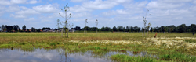
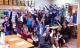
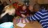
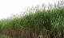
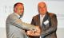

NATUUR EN MILIEU CENTRUM HAARLEMMERMEER
NMCH DUURZAAM NATUURLIJK!
Centrum voor Duurzaamheid
Het NMCH is het kennis- en adviescentrum op het gebied van natuur, milieu, energie en duurzaamheid in Haarlemmermeer.

Actueel

In de Genieloods van Kunstfort Vijfhuizen zijn vanmorgen de vier winnaars van de strijd om de titel Milieuheld Haarlemmermeer bekend gemaakt....
Lees verder - Bedrijven, Bewoners, Onderwijs

Tevreden geluiden na afloop van het eerste Repair Café Haarlemmermeer dat 15 mei jl. plaatsvond....
Lees verder - Bewoners

25-04-2013
60 hectare olifantsgras
1e deel van 60 hectare aan olifantsgras in Haarlemmermeer wordt geplant, hiermee wordt 1e stap naar biobased economy op A4 Zone West gezet....
Lees verder - Bedrijven, Bewoners

SHARE Haarlemmermeer 2013; Back to Basic - Back to Business succesvol verlopen....
Lees verder - Bedrijven, Bewoners
Volledig actualiteitsoverzicht
Onder de aandacht
Subsidies

De Groene Loper

Natuurrijk Haarlemmermeer

Partners

Snel contact
Heeft u het antwoord op uw vraag niet gevonden? Bel ons op: 023 555 34 37. Of laat hier uw gegevens achter, dan nemen wij contact met u op voor een afspraak.